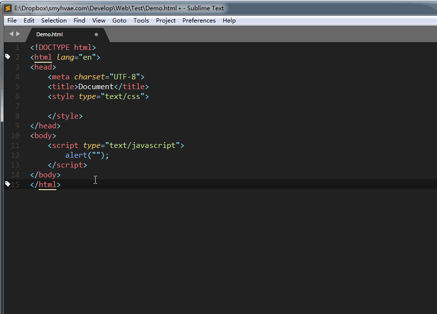

JavaScript背景
Web前端有三层：
发展历史
JavaScript诞生于1995年。布兰登 • 艾奇（Brendan Eich，1961年～），1995年在网景公司，开发除了JavaScript语言。
JavaScript是由网景公司（Netscape）发明，最初命名为LiveScript；1995年12月与SUN公司合作，因市场宣传需要，改名为 JavaScript。
后来 Sun 公司 被Oracle收购，JavaScript版权归Oracle所有。
备注：由于当时Java这个语言特别火，所以为了傍大牌，就改名为JavaScript。如同“北大”和“北大青鸟”的关系。“北大青鸟”就是傍“北大”大牌。
同时期还有其他的网页语言，比如VBScript、JScript等等，但是后来都被JavaScript打败了，所以现在的浏览器中，只运行一种脚本语言就是JavaScript。
1996年，微软为了抢占市场，推出了JScript在IE3.0中使用。
1996年11月网景公司将JS提交给ECMA(国际标准化组织)成为国际标准，用于对抗微软。
JavaScript是世界上用的最多的脚本语言。
JavaScript的发展：蒸蒸日上
2003年之前，JavaScript被认为“牛皮鲜”，用来制作页面上的广告，弹窗、漂浮的广告。什么东西让人烦，什么东西就是JavaScript开发的。所以很多浏览器就推出了屏蔽广告功能。
2004年，JavaScript命运开始改变。那一年，谷歌公司开始带头使用Ajax技术，Ajax技术就是JavaScript的一个应用。并且，那时候人们逐渐开始提升用户体验了。Ajax有一些应用场景。比如，当我们在百度搜索框搜文字时，输入框下方的智能提示，可以通过Ajax实现。比如，当我们注册网易邮箱时，能够及时发现用户名是否被占用，而不用调到另外一个页面。
2007年乔布斯发布了第一款iPhone，这一年开始，用户就多了上网的途径，就是用移动设备上网。
JavaScript在移动页面中，也是不可或缺的。并且这一年，互联网开始标准化，按照W3C规则三层分离，JavaScript越来越被重视。
2010年，人们更加了解HTML5技术，HTML5推出了一个东西叫做Canvas（画布），工程师可以在Canvas上进行游戏制作，利用的就是JavaScript。
2011年，Node.js诞生，使JavaScript能够开发服务器程序了。
如今，WebApp已经非常流行，就是用网页技术开发手机应用。手机系统有iOS、安卓。比如公司要开发一个“携程网”App，就需要招聘三队人马，比如iOS工程师10人，安卓工程师10人，前端工程师10人。共30人，开发成本大；而且如果要改版，要改3个版本。现在，假设公司都用web技术，用html+css+javascript技术就可以开发App。也易于迭代（网页一改变，所有的终端都变了）。
虽然目前WebApp（Web应用）在功能和性能上的体验远不如Native App（原生应用），但是“在原生App中内嵌一部分H5页面”已经是一种趋势。
JavaScript介绍
JavaScript入门易学性
-
JavaScript对初学者比较友好、简单易用。可以使用任何文本编辑工具编写，只需要浏览器就可以执行程序。
-
JavaScript是有界面效果的（相比之下，C语言只有白底黑字）。
-
JavaScript是弱变量类型的语言，变量只需要用 var/let/const 来声明。而Java中变量的声明，要根据变量的类型来定义。
比如Java中需要定义如下变量：
java
int a;
float a;
double a;
String a;
boolean a;
而JavaScript中，只需要用一种方式来定义：
// ES6 写法
const a;
let a;
JavaScript是前端语言
JavaScript是前端语言，而不是后台语言。
JavaScript运行在用户的终端网页上，而不是服务器上，所以我们称之为“前端语言”。就是服务于页面的交互效果、美化，不能操作数据库。
后台语言是运行在服务器上的，比如PHP、ASP、JSP等等，这些语言都能够操作数据库，都能够对数据库进行“增删改查”操作。
备注：Node.js是用 JavaScript 开发的，现在也可以基于 Node.js 技术进行服务器端编程。
JavaScript的组成
JavaScript基础分为三个部分：
-
ECMAScript：JavaScript 的语法标准。包括变量、表达式、运算符、函数、if语句、for语句等。
-
DOM：Document Object Model（文档对象模型），操作页面上的元素的API。比如让盒子移动、变色、改变大小、轮播图等等。
-
BOM：Browser Object Model（浏览器对象模型），操作浏览器部分功能的API。通过BOM可以操作浏览器窗口，比如弹框、控制浏览器跳转、获取浏览器分辨率等等。
通俗理解就是：ECMAScript 是 JS 的语法；DOM 和 BOM 浏览器运行环境为 JS提供的API。
JavaScript 的特点
特点1：解释型语言
JavaScript 是解释型语言，不需要事先被翻译为机器码；而是边翻译边执行（翻译一行，执行一行）。
什么是「解释型语言」？详见下一段。
由于少了实现编译这一步骤，所以解释型语言开发起来尤为方便，但是解释型语言运行较慢也是它的劣势。不过解释型语言中使用了JIT技术，使得运行速度得以改善。
特点2：单线程
特点3：ECMAScript标准
ECMAScript是一种由 ECMA 国际（前身为欧洲计算机制造商协会,英文名称是European Computer Manufacturers Association）制定和发布的脚本语言规范。
JavaScript是由公司开发而成的，问题是不便于其他的公司拓展和使用。所以欧洲的这个ECMA的组织，牵头制定JavaScript的标准，取名为ECMAScript。
简单来说，ECMAScript不是一门语言，而是一个标准。ECMAScript 规定了JS的编程语法和基础核心知识，是所有浏览器厂商共同遵守的一套JS语法工业标准。
ECMAScript在2015年6月，发布了ECMAScript 6版本（ES6），语言的能力更强（也包含了很多新特性）。但是，浏览器的厂商不会那么快去追上这个标准，需要时间。
编程语言的分类
翻译器
计算机不能直接理解任何除机器语言以外的语言，所以必须要把程序员所编写的语言翻译成机器语言，计算机才能执行程序。程序语言翻译成机器语言的工具，被称为翻译器。
由此可见，所谓的“翻译”，指的是翻译成计算机能够执行的指令。
翻译器翻译的方式有两种：一种是编译，另一种是解释。两种方式之间的区别在于翻译的时机不同。
对应的语言，称之为“编译型语言”、“解释型语言”。
编译型语言
比如说，c语言的代码文件是.c后缀，翻译之后文件是.obj后缀，系统执行的是 obj 文件；再比如， java 语言的代码文件是.java后缀，翻译之后的文件是.class后缀。（注意，Java
语言不是严格的 编译型语言，这个一会儿会讲）
解释型语言
Java语言
Java 语言既不是编译型语言，也不是解释型语言。翻译过程：
（1）编译：.java代码文件先通过 javac 命令编译成.class文件。
（2）执行：.class文件再通过 jvm 虚拟机，解释执行。有了 jvm 的存在，让 java 跨平台了。
开始写第一行JavaScript代码
JavaScript 代码的书写位置在哪里呢？这个问题，也可以理解成：引入 js 代码，有哪几种方式。
方式1：行内式
代码举例：
<input type="button" value="点我点我" onclick="alert('千古壹号')" />
完整的可执行代码如下：
<!DOCTYPE html>
<html lang="en">
<head>
<meta charset="UTF-8" />
<meta name="viewport" content="width=device-width, initial-scale=1.0" />
<title>Document</title>
</head>
<body>
<input type="button" value="点我点我" onclick="alert('千古壹号的方式1')" />
</body>
</html>
分析：
-
可以将单行或少量 JS 代码写在HTML标签的事件属性中（以 on 开头的属性），比如放在上面的 onclick点击事件中。
-
这种书写方式，不推荐使用，原因是：可读性差，尤其是需要编写大量 JS代码时，容易出错；引号多层嵌套时，也容易出错。
-
关于代码中的「引号」，在HTML标签中，我们推荐使用双引号, JS 中我们推荐使用单引号。
方式2、内嵌式
我们可以在html 页面的 <body> 标签里放入<script type=”text/javascript”></script>标签对儿，并在<script>里书写JavaScript
代码：
<!DOCTYPE html>
<html lang="en">
<head>
<meta charset="UTF-8">
<title>Document</title>
</head>
<body>
<script type="text/javascript">
// 在这里写 js 代码
alert('千古壹号的方式2');
console.log('qianguyihao 方式2');
</script>
</body>
</html>
分析：
方式3：引入外部的 JS 文件
<!DOCTYPE html>
<html lang="en">
<head>
<meta charset="UTF-8">
<title>Document</title>
</head>
<body>
<!-- 引入外部的 js 文件 -->
<script src="tool.js"></script>
</body>
</html>
上面这段代码，依然是放到body标签里，可以和内嵌的js代码并列。
另外，引用外部 JS文件的 script 标签中间不可以再写代码。
总结：
我们在实战开发中，基本都是采用方式3，因为这种方式，可以确保 html 文件和 js 文件是分开的，有利于代码的结构化和复用。很少会有人把一大堆 js 代码塞到 html 文件里。
JS一些简单的语法规则
学习程序，是有规律可循的，程序会有有相同的部分，这些部分就是一种规定，不能更改，我们成为：语法。
（1）JavaScript对换行、缩进、空格不敏感。每一条语句以分号结尾。
也就是说：
代码一：
<script type="text/javascript">
alert("今天蓝天白云");
alert("我很高兴");
</script>
等价于代码二：
<script type="text/javascript">
alert("今天蓝天白云");alert("我很高兴");
</script>
备注：每一条语句末尾要加上分号，虽然分号不是必须加的，如果不写分号，浏览器会自动添加，但是会消耗一些系统资源。
（2）所有的符号，都是英语的。比如括号、引号、分号。
如果你用的是搜狗拼音，建议不要用shift切换中英文（可以在搜狗软件里进行设置），不然很容易输入中文的分号；建议用ctrl+space切换中英文输入法。
（3）严格区分大小写。
注释
我们不要把 HTML、CSS、JavaScript三者的注释格式搞混淆了。
HTML 的注释
<!-- 我是注释 -->
CSS的注释
<style >
/*
我是注释
*/
p{
font-weight: bold;
font-style: italic;
color: red;
}
</style>
注意：CSS只有/* */这种注释，没有//这种注释。而且注释要写在<style>标签里面才算生效哦。
JavaScript 的注释
单行注释：
// 我是注释
多行注释：
/*
多行注释1
多行注释2
*/
补充：VS Code中，单行注释的快捷键是「Ctrl + /」，多行注释的默认快捷键是「Alt + Shift + A」。
当然，如果你觉得多行注释的默认快捷键不方便，我们还可以修改默认快捷键。操作如下：
VS Code --> 首选项 --> 键盘快捷方式 --> 查找“注释”这两个字 --> 将原来的快捷键修改为「Ctrl + Shift + /」。
Javascript 输入输出语句
弹出警告框：alert语句
我们要学习的第一个语句，就是alert语句。
代码举例如下：
alert（英文翻译为“警报”）的用途：弹出“警告框”。
alert("")警告框的效果如下：

这个警告框，在IE浏览器中长这样：

上面的代码中，如果写了两个alert()语句的话，网页的效果是：弹出第一个警告框，点击确定后，继续弹出第二个警告框。
控制台输出：console.log("")
console.log("")表示在控制台中输出。console表示“控制台”，log表示“输出”。
在Chrome浏览器中，按F12即可打开控制台，选择「console」栏，即可看到打印的内容。
console.log("")效果如下：
控制台是工程师、程序员调试程序的地方。程序员经常使用这条语句输出一些东西，来测试程序是否正确。
普通人是不会在意控制台的，但是有些网站另藏玄机。有个很有意思的地方是，百度首页的控制台，悄悄地放了一段招聘信息：

毕竟做前端的人是经常使用控制台的。
总结：alert() 主要用来显示消息给用户，console.log() 用来给程序员自己调试用的。
弹出输入框：prompt()语句
prompt()就是专门用来弹出能够让用户输入的对话框。用得少，测试的时候偶尔会用。
JS代码如下：
javascript
var a = prompt("请随便输入点什么东西吧");
console.log(a);
上方代码中，用户输入的内容，将被传递到变量 a 里面，并在控制台打印出来。
效果如下：

prompt()语句中，用户不管输入什么内容，都是字符串。
alert()和prompt()的区别：